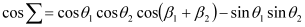

|
|
|


螺旋角
这里可以输入螺旋角，或选择直齿轮齿形。螺旋角输入仅适用于齿轮1。齿轮2可能具有与齿轮1不同的螺旋角值，其值将通过计算得出。对于总齿廓变位量为0的齿轮，以下方程适用于根据输入参数确定第二个螺旋角：

English Original
Helix angle
Here you can enter the helix angle, or else select a spur gear toothing. The helix angle entry only applies to gear 1. Gear 2 may have a different helix angle value from gear 1, and is calculated. For gears with total profile shift 0, the following equation applies for determining the second helix angle from the entered parameters: